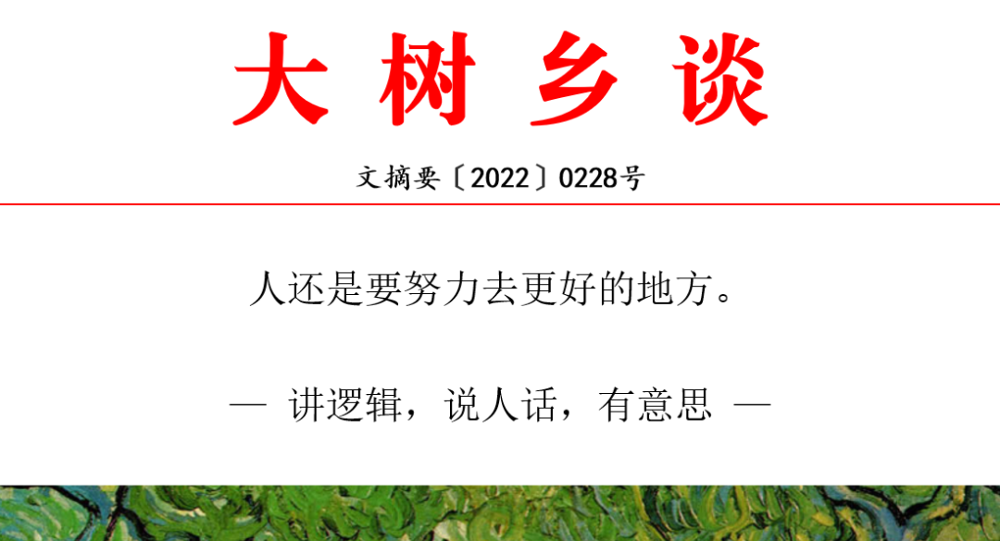
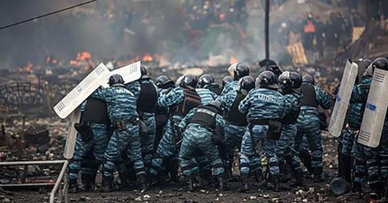
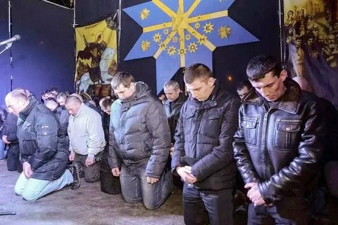
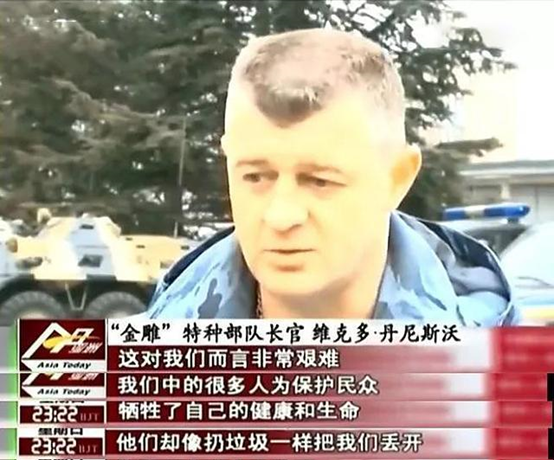

去更有底线的地方

这个世界，很多地方底线很低，甚至没有底线。 这样的地方需要改变，但是从个人的角度，换地方或许是更好的选择，毕竟人生很短、意外很多。国内外皆同。 比如乌克兰。
过去的几天，双方都释放了很多烟雾弹，但可以非常明显的感觉到，乌克兰的军人抵抗意志很低，以至于乌克兰政府竟然直接向平民发放枪支，甚至培训巷战、制造燃烧瓶，还要在居民区布设军事装备。 有法国记者报道：袭击乌克兰平民建筑的炮弹，是乌克兰自己发射的；还有报道称，乌克兰组织平民以肉体阻拦俄军战车。
反而是俄罗斯公开表示会提前通报即将袭击的目标，俄罗斯国防部还表示，基辅公共交通恢复运营，基辅的平民可以自由离开城市。 到底谁才是乌克兰人民的保护者？俄罗斯还是乌克兰？ 当然，俄罗斯这么做也是为了避免造成流血事件，从而陷入被动；但乌克兰政府这么做，无论如何也说不过去。 这一切，早在至少2014年就已经注定了。毕竟一个买办、戏子当国的傀儡政权，又怎么可能维护乌克兰人民的利益？反而把乌克兰人民当做肉盾和牺牲品，实现美国的目标，才更符合走狗的利益。 2014年，乌克兰“颜色革命”爆发，在乌克兰全国发生极为激烈的暴乱，一些别有用心的势力煽动民众、制造流血事件。
当时已经转型为负责维护国内公共秩序的金雕特种部队，奉命强攻基辅市中心独立广场聚集的反对派阵营。

被极端分子围攻中的金雕特种部队成员
示威者为了阻止金雕特种部队突破路障，在广场周围引燃大火，极端分子和金雕特种部队爆发大规模冲突，极端分子甚至使用了枪械。最终造成26人死亡，600多人受伤。而这起奉命执行的任务最终导致成立已经22年的金雕特种部队灭亡。 这一天是2014年2月18日，在外部势力或者说美国的干预下，亲俄的亚努科维奇政权倒台，亚努科维奇逃亡俄罗斯。 乌克兰反对派成立了临时政府接管全国，而镇压反对派的金雕特种部队成为眼中钉，乌克兰临时政府以“过度使用暴力”为由要求金雕特种部队士兵向民众下跪道歉。

被带到广场上高台，勒令向反对派示威者下跪谢罪的金雕特种部队成员
金雕特种部队不过是执行政府命令，然而下达命令的人没事，围攻议会大楼的人入主大楼，反而是执行命令、为保护乌克兰民众付出牺牲的军人，被当成垃圾丢弃，这如何能接受？

下跪之后，这支部队的灵魂彻底没了，2月26日更是被乌克兰临时政府以有罪为名下令解散。 一支成立于1992年乌克兰独立初期，曾经是乌克兰最为精锐更是战功卓越的特种部队，就这么没了，被效忠的政府当做垃圾扔掉了。 兔死狐悲，乌克兰其他部队怎能不寒心？现在乌克兰各部队消极抵抗、甚至无视命令逃离阵地正是源于此。正因为丧失了乌克兰国防军的军心，后来乌克兰才将大量民间极端武装，比如新纳粹的“亚速营”编入国民警卫队。 而原本金雕特种部队军人为国家赴汤蹈火却被自己的政府背叛、成了罪人还被开除，很多人走投无路。
最后俄罗斯伸出了援助之手，愿意接纳并保留原先一切军职和福利待遇。 于是有相当一部分军人南下到已经独立的克里米亚集结，受到了克里米亚民众夹道欢迎，获得俄罗斯国籍并成为了俄罗斯军队的中坚力量。而克里米亚原先属于乌克兰的军事单位，仅仅几周，就有近七成宣布倒戈。 2014年是乌克兰彻底的分水岭，从此不再存在博弈，乌克兰政府彻底沦为外部力量和资本的傀儡，乌克兰人在看不到希望的情况下，破罐破摔的选择了一个喜剧演员担任总统。当然泽连斯基在演员领域确实很杰出，可类比为乌克兰的沈腾，就是不知道沈腾愿不愿意被这么对比？
但细想一下，泽连斯基之所以当上总统，就是因为在2015年播出的《人民公仆》中担任总统，而这部电视剧也可以认为就是资本投资的超级竞选广告。乌克兰人从一开始就被诱导了。 如此乌克兰，又哪里有什么希望呢？从享誉世界的欧洲粮仓到“欧洲子宫”，乌克兰只用了30年。普通乌克兰人一个月收入不过一两千人民币，还要面对寡头、腐败、买办的多重剥削。
既然乌克兰已经是一个没有底线的国度，那有能力的人自然会选择离开。 然而国家破落至此，乌克兰人自然也备受歧视。
比如最近西方制造中国针对乌克兰女性的负面舆论，但实际上，就是这些自诩文明的西方国家，把乌克兰女性视为“欧洲的子宫”，这又何尝不是西方国家一贯的虚伪呢？ 就好比现在，整个西方都愤怒了，强烈谴责俄罗斯并且要制裁，可当年美国这么干的时候，他们在哪呢？ 当然，当今世界，就是强国政治，也没什么可说的。 国内也有类似的情况。 小镇一直建议读者朋友们一定尽可能去更发达的城市，哪怕不能留在一线城市，也要去次一线、二线城市，尽可能至少去省会城市或者比较强的地级市，也与今天的主题有关。
不仅仅大城市机会更多，毕竟想在大城市立足，作为整个家庭的第一代，一定会承受巨大的压力，包括经济的、精神的、身体的，幸福感可能未必比待在老家舒服。 但是大家还记不记得已经不久前还在热议的丰某县？还记不记得几天前还激烈讨论的拐卖问题？ 小镇不想说什么大道理，这个世界最终可能会变得哪里都一样，但至少现在绝对不是，人与人、地区与地区就是不一样。 越大的城市，底线或者说保障一定越高。 或许有朋友说，作为第一代北漂、沪漂，连户口都没有，别说房子、车子了，谈什么保障呢？
但有没有考虑自己的未来、有没有考虑下一代？ 一个家庭想要通过一代人实现大跨越，本来就是极为特殊的，过去的几十年不是人类历史的常态。但是一代代接力努力一定不同，也可以为下一代奠定更好的基础。 比如小镇，父母通过高考进入大学，实现了农村到小城市民的转变，而小镇幸运的去了更大的城市、然后到了首都，并且在首都勉强立身，那么小镇的下一代就将拥有远比小镇家庭此前好的多的基础。 更重要的是，小镇的下一代的底线已经提高了，在北京这样的大城市也可以很大程度上避免类似于丰某县还有其他黑暗的事情，这就是更高的底线、更好的保障。
总之一句话，人还是要努力去更好的地方，孟母三迁的道理，古今中外皆同。
其他文章推荐
■ 丰县调查：老百姓要的是安心
如果喜欢，还请点赞、“在看”和关注吧 欢迎分享，让更多人发现“大树乡谈”